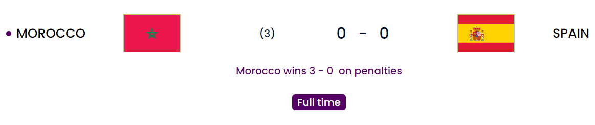
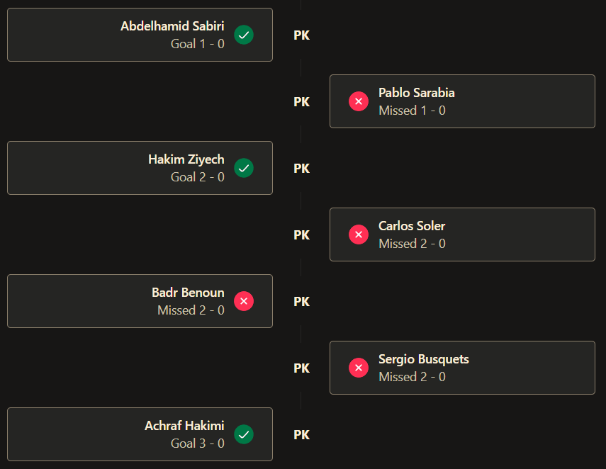
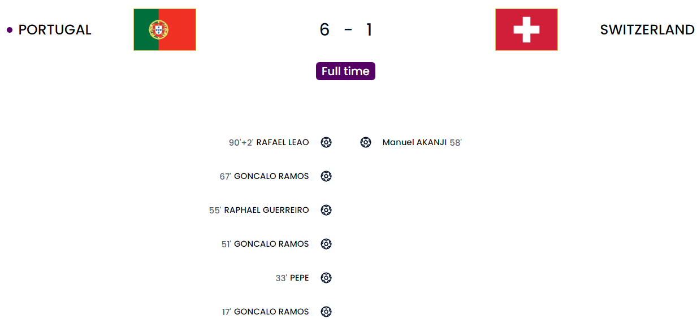
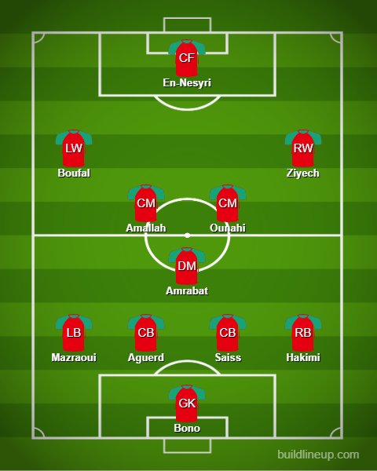
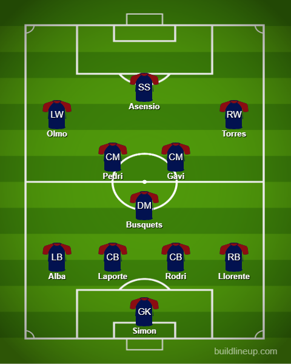
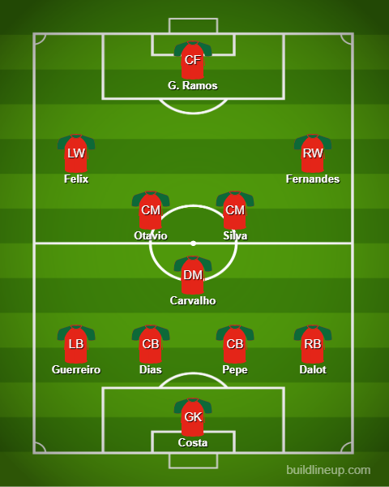
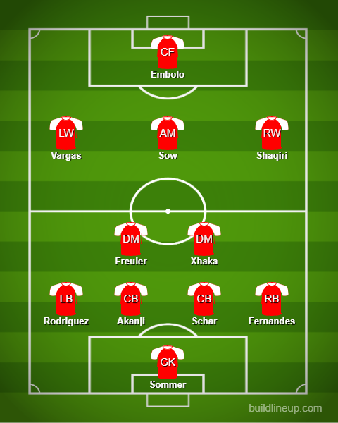
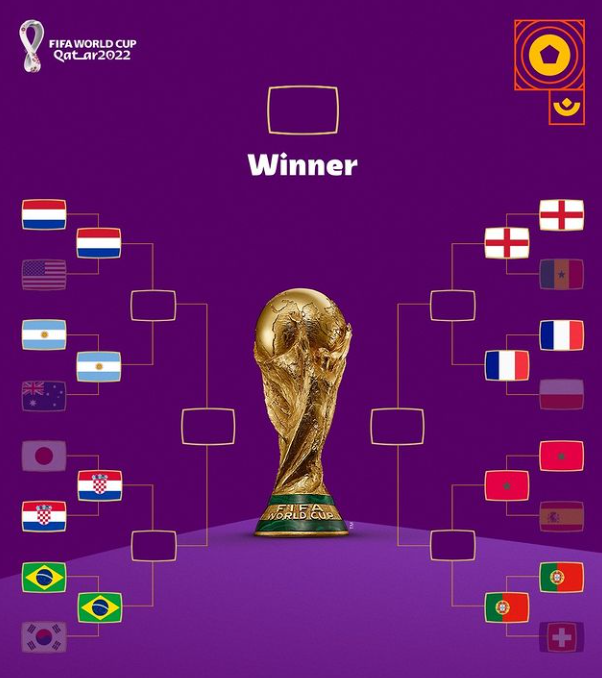

Day 17
End of Round of 16
Morocco v Spain and Portugal v Switzerland



We have found our dark horses of this tournament. Ronaldo was dropped but was happy with the team’s performance. His replacement takes the headlines. We have the last quarter-final which is going to be between Morocco and Portugal. Morocco knocking out Spain yet again(They lost to Russia in a PK shootout last WC 🤭). Portugal outplay Switzerland and Ramos was at the center of it all. Let’s dive in.
Match 1
Morocco withstand Spain easily. Spain had no urgency. Hakimi as cool as can be.
This was completely embarrassing from Spain. Major major kudos to Morocco for managing to hold on. Spain honestly had just one trick and that was to make sure they just passed and passed and passed us allllll to 😴. Morocco was also fairly threatening with the likes of Boufal especially. Amrabat was solid as a wall in the midfield holding back the likes of Pedri and Gavi. I think in a situation like this the experience of De Gea(He may not be a sweeper yet but at least he is one of the best shot-stoppers there is), Ramos(Laporte had a chance at the very end of the 90 minutes but completely miscued it. Ramos would have been on the end of it) and they looked lost with just Busquets on the field(Like seriously Enrique just stop being so arrogant and stubborn). Enrique made the players take 1000 penalties. Hah. Guessing they missed all of them because they didn’t score a SINGLE one in this shootout. Sarabia had the chance of a lifetime. He was brought on for the shootout and almost won the game at the end of extra time but his shot grazed the left post. He felt hard done by that so he decided to hit the right post in the shootout 🤦♂. Unless Enrique stops being stubborn and does not utilize the experience they have and groom the right players for each position they ain’t going far. Hakimi was born and brought up in Spain and could have played for them. In the end, he decided to score the winning penalty(A panenka no less 😱) to knock Spain out and he did Ramos' penguin celebration for good measure. Bono also deserves the rightful shout for making 2 saves in this shootout.
Morocco

Spain

Match 2
Goncalo Ramos center stage. Ronaldo dropped but was not fazed. Switzerland provided no competition.
Major news before the match even began was being circulated that Santos(Portugal coach) was unhappy about Ronaldo’s attitude when he was being substituted in the South Korea match. As a consequence of that Ronaldo was DROPPED from the starting 11 and 21-year-old Goncalo Ramos who has been putting up decent numbers for Benfica was starting in place of him and boy did he step up. Scoring the first hat trick at the World Cup that was a great performance. The first goal was Ramos who finished well after a pass from Felix. Top left near post leaving Sommer with little chance. The second was from Pepe. The man turns 40 soon and he is still at the top of his game at the back. A towering header over the likes of Schar and Akanji(The latter saw him late and Schar is usually good aerially) and was aimed brilliantly. He now becomes the second oldest player(39) to score at World Cups after Roger Milla(42) and before Ronaldo(37). Switzerland looked clueless overall. Next in the second half the demolition truly began. Dalot did well on the right and whipped a low cross to Ramos who finished well by squeezing it under Sommer. Next on the list was Guerreiro who managed to make a great forward run and was set up well by Ramos and his shot was in the top corner which Sommer didn’t even read properly(Psst. If you see the highlights you will see Ronaldo being happy at seeing the national team score. Some things that the media 🤡s won’t tell you). I like how the media just loves to scapegoat. They just conveniently remove the parts where Ronaldo actually was celebrating and just stick stubbornly to the narrative: “Oh cRiStIaNo rOnAlDo wAs dRoPpEd fOr rAmOs aNd hE ScOrEd aNd rOnAlDo wAs sUlKiNg aNd pEtTy”. Do your bloody research and look at every angle before putting out 💩 like this 😒. Later on, the Swiss brought one back but they knew they were beaten. The corner came in, and Akanji crept in unmarked at the back post to finish it. Funnily enough, Ramos was the one who had the last touch before Akanji(Guess it is a Portugal forward thing of assisting goals for the opponent from corners 😅). Ramos completed his hat trick after a great pass from Felix and he just cooly lifted the ball past the keeper. The final icing on the cake was from Leao who managed to put an outrageous curling effort into the right corner(How is he always smiling before his shots hit the target? 😂). Hit the griddy as well 🤣. Surely he should be considered for Felix as well despite his 2 assists. He is more of a goal threat. Hopefully, we can see him starting the quarterfinal against Morocco.
Portugal

Switzerland

Quarterfinal Showdown
